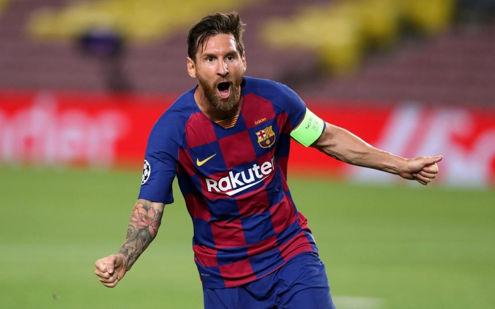
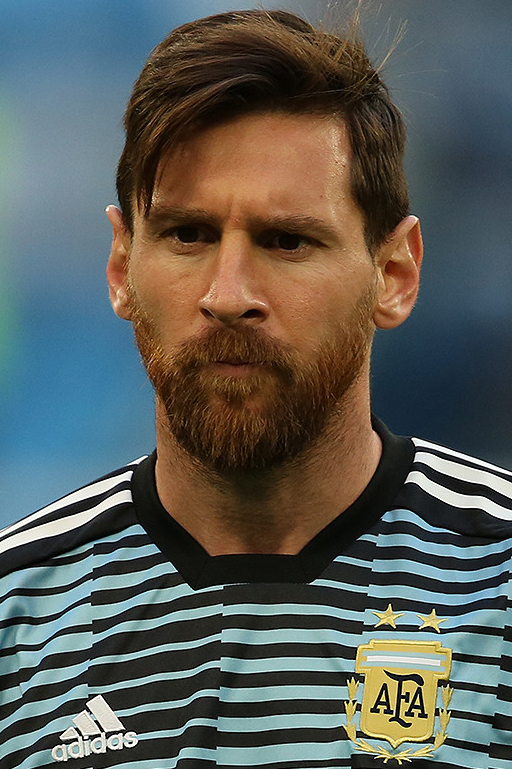

Lionel Messi
O melhor jogador de futebol do mundo


Messi pela Seleção Argentina na Copa do Mundo FIFA de 2018
Carreira - Timeline
Lionel Andrés Messi Cuccittini, 24 de junho de 1987, Rosário - Argentina
Prêmios Individuais de Lionel Messi:
FIFA Ballon d'Or: 2010, 2011, 2012 e 2015
Melhor Jogador do Mundo pela FIFA: 2009
Ballon d'Or: 2009 e 2019
The Best FIFA Football Awards: 2019
Onze d'Or: 2008-09, 2010–11, 2011–12 e 2017–18
Onze d'Argent: 2007–08, 2016–17 e 2018–19
Melhor Jogador do Mundo pela FIFPro: 2009, 2010, 2011, 2012, 2015 e 2019
Melhor Jogador do Mundo pela revista World Soccer: 2009, 2011, 2012, 2015 e 2019
Melhor Jogador da UEFA na Europa: 2010–11 e 2014–15
Chuteira de Ouro da UEFA: 2009–10, 2011–12, 2012–13, 2016–17, 2017–18 e 2018–19
Jogador argentino do ano: 2005, 2006, 2007, 2008, 2009, 2010, 2011, 2012, 2013, 2014, 2015, 2016, 2017, 2018, 2019 e 2020
Prêmio Olimpia de Oro (Melhor atleta argentino do ano): 2011
Melhor Jogador Jovem do Mundo pela FIFPro: 2006, 2007 e 2008
Melhor Jogador Jovem do Mundo pela revista World Soccer: 2006, 2007 e 2008
Melhor Jogador do Mundo pela Eurosport: 2015
Melhor Jogador do Mundo pela Goal 50: 2009, 2011, 2013 e 2015
Melhor jogador do mundo pela FourFourTwo: 2009, 2010, 2011, 2012, 2015, 2017 e 2018
Melhor jogador do ano pelo The Guardian: 2012, 2013, 2015, 2017 e 2019
Melhor jogador do mundo pela Sky Sports: 2015 e 2016
Jogador do ano pelo Marca: 2018
Melhor jogador da história do Espanhol pela CIHEFE
Jogador do ano pela Globe Soccer Awards: 2015
Jogador do ano pela revista L'Équipe: 2011 e 2015
Melhor criador de jogo pela IFFHS: 2015, 2016, 2017 e 2019
Golden Boy: 2005
Trofeo Bravo: 2007
Trofeu Aldo Rovira:2009–10, 2011–12, 2012–13, 2014–15, 2016–17 e 2017–18
Don Balón - Melhor jogador estrangeiro: 2007, 2009, 2010
Troféu EFE: 2007, 2009, 2010, 2011 e 2012.
Trofeo Alfredo Di Stéfano: 2008–09, 2009–10, 2010–11, 2014–15, 2016–17, 2017–18, 2018–19 e 2019–20
Troféu Pichichi: 2009–10, 2011–12, 2012–13, 2016–17, 2017–18, 2018–19 e 2019–20
Melhor Atleta Eleito pela ESPY Awards: 2012, 2015 e 2019
Melhor Atacante do ano pela ESPN: 2018
Prêmios LFP: 2008–09, 2010–11, 2011–12, 2012–13 e 2014–15
Jogador do Mês da La Liga: janeiro de 2016, abril de 2017, abril de 2018, setembro de 2018, março de 2019, novembro de 2019 e fevereiro de 2020
Melhor atacante da La Liga: 2008–09, 2009–10, 2010–11, 2011–12, 2012–13, 2014–15, 2015–16 e 2017–18
Melhor jogador da La Liga: 2017–18
Melhor gol da UEFA: 2015–16
Melhor gol da Liga dos Campeões da UEFA de 2018–19
Melhor jogador da história: revista Sports Illustrated e revista Voetbal International
Melhor jogador do século XXI: The Independet
Melhor driblador do futebol mundial de todos os tempos: enquete no Twitter do canal francês RMC
8º Melhor atleta da década pela USA Today e 1º Melhor jogador de futebol
Prêmio Laureus do Esporte Mundial de atleta masculino do ano: 2020